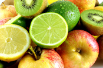
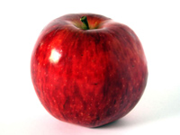
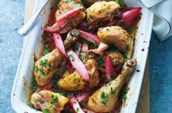

You may be tempted to try one of the diets that fill the pages of magazines every week. Unfortunately fad diets are rarely a good idea. They don't always work and can encourage you to miss some important types of food.
Making a few simple changes to your diet and cutting down on sweets and fatty snacks are a lot healthier in the long term

A well-balanced diet is one that is low in fat, sugar and salt and high in fibre. (Fibre is the part of fruit, vegetables or cereal that passes through your body undigested and helps to prevent constipation.) Your diet should also contain enough protein and a wide range of vitamins and minerals. Healthy eating means getting the right balance between different foods. For many people this means a change towards eating more fruit, vegetables and higher fibre starchy foods. There are five food groups, each one providing a different combination of the three essential nutrients - carbohydrates, fat and protein - as well as vitamins and minerals. These are:
Bread, cereal, potatoes, rice, pasta, noodles and chapatti. These are starchy carbohydrates that are good for slow release energy. Choose one of these foods at each meal as they release energy slowly into the bloodstream. High fibre versions will keep you feeling fuller for longer. The only fat we get from these foods is the fat we eat with them, such as butter on bread or potatoes or full cream milk on cereal. Watch out for these added fats - opt for low fat versions if you can.
Fruit and vegetables. These are high in fibre, vitamins and minerals. Aim for five portions a day. Fruit and vegetables provide essential vitamins and fibre, helping to protect your body against heart disease and some forms of cancer. A portion could be one of the following:
»one glass of orange juice
»two tablespoons of vegetables - raw, cooked, frozen or canned
»one dessert bowl of salad
»one apple, orange, banana or similar sized fruit
»two small fruits - plums, apricots
»a small handful of grapes or cherries
»a half-tin of tinned fruit in natural juice or
»dessert bowl of stewed fruit.

Milk, yoghurt, eggs and cheese. These are high in protein and provide calcium for healthy bones and teeth. You can choose low-fat versions to help you keep to a healthy weight.
Meat, poultry, fish, nuts, pulses, beans, tofu and cheese. These are high in protein. Beans and pulses also provide useful fibre. Try to have two helpings of protein-rich foods a day. Red meat is higher in fat than chicken and fish but is a very good source of iron so should be included in the diet at least twice a week.

High-calorie foods, such as fried and sugary foods. These foods have a high fat and sugar content. Foods include cakes, biscuits, chocolate, crisps, fried foods and pastries which are high in both fat and calories. Where possible choose low-fat, low-calorie versions or enjoy these occasionally as a treat.
It is important to choose a variety of foods from the first four groups every day to get a wide range of nutrients. For most people, food from the fifth group should only be eaten as treats. If you are under weight and need more calories, you may be advised to eat more of these foods.
Delicious Recipes
Listed below are links to five fantastic recipies which you can download or print off, and then use at home to make some great, homely food.
Nordic Chicken, with Rhubarb
Chicken and Tomato Soup
Fruit Salad
Pancakes
Fruit Smoothie
© Daniel Ingram, 2011 ~ Site Map
All content within is provided for general information only, and should not be treated as a substitute for the medical advice of your own doctor or any other health care professional. We are not responsible or liable for any diagnosis made by a user based on the content of this website. We are not liable for the contents of any external internet sites listed, nor does it endorse any commercial product or service mentioned or advised on any of the sites. See our Links Policy for more information. Always consult your own GP if you're in any way concerned about your health.